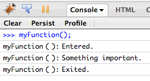
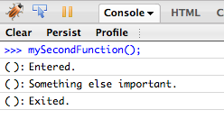

This site contains several examples of how willow can be used to help JavaScript developers trace and log their code.
It's important to remember that willow can only provide function names in its logging capabilities if you explicitly "name" your functions. A named function looks like this:
function myFunction(){
willow.enter();
console.log("Something important.");
willow.exit();
}Unnamed functions, however, are missing the key part - the name (e.g. myFunction) - and are usually assigned to some variable. For example:
var mySecondFunction = function(){
willow.enter();
console.log("Something else important.");
willow.exit();
}Notice how the output in Firefox's console differs between the two versions.